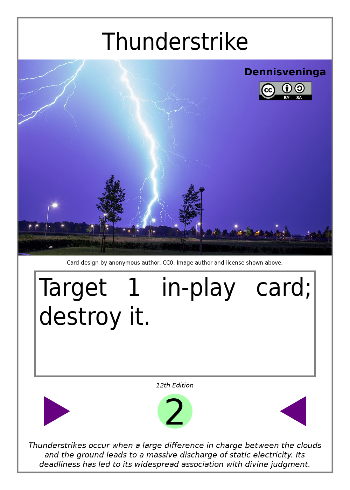

Card Building Examples (12th Edition)
This page is a supplement to the Card Building Guide. It goes over how to recreate specific examples of cards from the starter decks.
Contents
Example: Velociraptor
This is a simple minion with no abilities. The following steps recreate this minion:
- Begin with the minion's level set to 0.
- Choose the minion's SP. You can choose any number. In this case, we choose 2.
- Add the minion's SP to its level, bringing it to 2.
- Choose the minion's HP. You can choose any number, but a multiple of 5 is recommended. In this case, we choose 10.
- Take the minion's SP and divide it by 5. Add the result to the minion's level, bringing it to 4.
- The minion's final level in this example is 4.
Example: Antibiotic
This is an example of the simplest possible spell, composed only of a single effect. The following steps recreate this spell:
- Begin with the spell's level set to 0.
- Choose the effect you want from Card Building Guide: Effects. In this case, it's, “x-dice-heal yourself.”
- Since the effect has a variable x, replace that variable with a number. In this case, we choose the number 2.
- Check the effect's level increase formula. In this case, the formula is Replace the variable x in this formula with the number chosen in the previous step; in this case, 2. Since the formula is only a simple variable, we're done; we add 2 to the spell's level.
- The spell's final level in this example is 2.
Example: Asteroid Impact
This spell is slightly more complex than Antibiotic, but still fairly simple, composed of a single target selection and a single effect. The following steps recreate this spell:
- Begin with the spell's level set to 0.
- Choose the effect you want from Card Building Guide: Effects. In this case, it's, “Destroy the targets.”
- Since the chosen effect does something with targets, we must include a target selection for this to do anything. Choose the target selection you want from Card Building Guide: Target Selections. In this case, we choose, “Target up to x in-play cards;”
- Since the target selection has a variable x, replace that variable with a number. In this case, we choose the number 4.
- Check the target selection's formula for the variable t. In this case, the formula is Replace the variable x in this formula with the number chosen in the previous step; in this case, 4. Doing so, we get Therefore, the variable t is set to 4.
- Check the effect's level increase formula. In this case, the formula is Replace the variable t in this formula with the number calculated in the previous step; in this case, 4. Doing so, we get We can now solve the level increase formula; doing so, we get 8 and therefore add 8 to the spell's level.
- The spell's sub-ability text is the target selection followed by the effect. In this case, we get, “Target up to 1 in-play cards; destroy the targets.”
- The spell's final level in this example is 8.
Example: Thunderstrike
This lower-level spell is made in almost exactly the same way as Asteroid Impact. The following steps recreate it:
- Begin with the spell's level set to 0.
- Choose the effect you want from Card Building Guide: Effects. In this case, it's, “Destroy the targets.”
- Since the chosen effect does something with targets, we must include a target selection for this to do anything. Choose the target selection you want from Card Building Guide: Target Selections. In this case, we choose, “Target up to x in-play cards;”
- Since the target selection has a variable x, replace that variable with a number. In this case, we choose the number 1.
- Check the target selection's formula for the variable t. In this case, the formula is Replace the variable x in this formula with the number chosen in the previous step; in this case, 1. Doing so, we get Therefore, the variable t is set to 1.
- Check the effect's level increase formula. In this case, the formula is Replace the variable t in this formula with the number calculated in the previous step; in this case, 1. Doing so, we get We can now solve the formula; doing so, we get 2 and therefore add 2 to the spell's level.
- The spell's sub-ability text is the target selection followed by the effect. In this case, we get, “Target up to 1 in-play cards; destroy the targets.”
- Since only 1 in-play card can be targeted, following the card building guide's recommendations, we remove the words "up to" and change the plural “cards” to the singular “card” in the card selection, and we change the plural “the targets” in the effect to the singular “it”. This gives us: “Target 1 in-play card; destroy it.”
- The spell's final level in this example is 2.